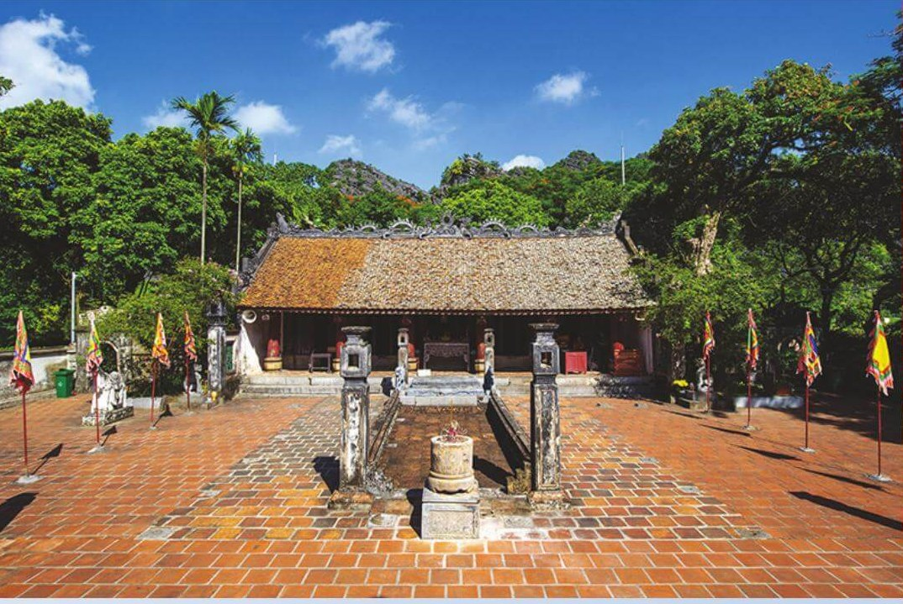

CỐ ĐÔ HOA LƯ
Giới thiệu đền vua Đinh

Đền thờ vua Đinh Tiên Hoàng được xây dựng vào thế kỷ XVII, trên nền móng cũ của cung đình xưa; Đền có kết cấu kiến trúc kiểu “Nội công, ngoại quốc”
Hiên đền là sự phô diễn về nghệ thuật chạm khắc. Trên Ván bưng trang trí các đề tài: Rồng săn thú, Rồng ngậm ngọc, lưỡng Long chầu chữ “ngọc”, Rồng chầu chữ “ Vạn”.

Điêu khắc đá thế kỷ XIX cũng được thể hiện rõ nét trên các chân tảng đá cổ bồng, ngưỡng cửa đá. Bằng nghệ thuật chạm lộng và chạm nổi tinh xảo, các nghệ nhân đã thể hiện nhiều đề tài trang trí: “Tứ linh” (Long, Ly, Quy’ Phượng), “Tứ quý” (Tùng, Cúc, Trúc, Mai hoặc Mai, Lan, Cúc, Trúc), “ Long hí Thủy”, “ Long hàm Thọ”, “ Bát bửu”... Đặc biệt người nghệ nhân còn chạm những phong cảnh nổi tiếng của Hoa Lư như: cầu Đông, cầu Dền, chùa Tháp, đình Ngang...

Nội điện kết cấu kiểu chữ Công, gồm ba tòa: Bái đường, Thiêu hương và Chính cung.
Tòa Bái đường thờ Công đồng. Tòa này treo bức đại tự “Chính thống thủy”, ca ngợi vua Đinh Tiên Hoàng là người đầu tiên trong lịch sử Việt Nam mở ra một nền tự chủ, thống nhất cho dân tộc. Bức đại tự như tấm bảng vàng lưu lại công lao nghìn thu của Tiên đế.
Tòa Thiêu hương là nơi thờ các quan văn võ triều Đinh, tòa này có bộ vì Ván mê tạc Rồng rất đẹp. Rồng ở đây được chạm với hoạt cảnh Rồng săn mồi, Rồng ổ, Rồng đàn, nét chạm điêu luyện, cho ta thấy được đời sống đa dạng của loài Rồng.
Tòa Chính cung bài trí tượng vua Đinh Tiên Hoàng, Nam Việt Vương Đinh Liễn, Thái tử Hạng Lang và Vệ Vương Đinh Toàn.


Vua Đinh Tiên Hoàng có tên húy là Đinh Bộ Lĩnh, sinh năm Giáp Thân (924) ở làng Đại Hữu, Châu Đại Hoàng (nay là xã Đại Hoàng, tỉnh Ninh Bình), cha của ông là Đinh Công Trứ - giữ chức Thứ sử Hoan Châu (nay là Nghệ An). Sau khi cha mất, Đinh Bộ Lĩnh về quê sống với mẹ Đàm Thị, hàng ngày đi chăn trâu cho chú và tập trận cờ lau. Từ bé Đinh Bộ Lĩnh đã tỏ ra là người có khả năng chỉ huy, ông cùng các bạn chăn trâu lấy bông lau làm cờ, dùng trâu làm ngựa, lấy đá thay vũ khí chia quân hai bên lập trận giả đánh nhau. Mỗi khi thắng trận các bạn tôn Đinh Bộ Lĩnh làm trưởng, khoanh chéo tay làm kiệu khiêng và cầm hoa lau đi hai bên để rước như nghi vệ Thiên tử.
Bước ngoặt lịch sử đến vào năm 944, Ngô Quyền băng hà, triều Ngô dần suy vong, các hào trưởng nổi lên cát cứ mỗi người một phương, sử gọi là loạn 12 sứ quân.Lúc này, yêu cầu cấp thiết là sớm chấm dứt nạn cát cứ để thống nhất đất nước. Người làm nên sứ mệnh lịch sử đó là Đinh Bộ Lĩnh. Đinh Bộ Lĩnh đã chiêu binh tụ nghĩa, lấy động Hoa Lư làm căn cứ ban đầu khởi nghiệp. Thấy lực lượng của mình lúc đầu còn yếu, Đinh Bộ Lĩnh đã liên kết với sứ quân Trần Lãm ở Bố Hải Khẩu (nay thuộc tỉnh Hưng Yên). Thấy Bộ Lĩnh là người khôi ngô tuấn tú, có tài thao lược, Trần Lãm đã trao toàn bộ binh quyền. Đinh Bộ Lĩnh đã đưa toàn bộ lực lượng ở Bố Hải Khẩu về nhập với nghĩa binh ở động Hoa Lư. Thế và lực của nghĩa quân Hoa Lư đã lớn lên vượt bậc. Đinh Bộ Lĩnh quyết định vừa hưng binh đánh lớn vừa dụ hàng các sứ quân. Trận đầu ra quân Bộ Lĩnh dùng mưu dụ hàng sứ quân Phạm Bạch Hổ. Thừa thế, ông kéo quân đến đánh tan sứ quân Đỗ Cảnh Thạc, ông lại hành binh thần tốc phá sứ quân Nguyễn Siêu, hạ thành Đường Lâm của sứ quân Ngô Nhật Khánh như trở bàn tay. Đinh Bộ Lĩnh đánh đâu thắng đấy, uy danh lẫy lừng. Ba quân tướng sĩ tôn vinh là Vạn Thắng Vương.
Năm 968, sau khi dẹp xong loạn, thống nhất đất nước, Đinh Bộ Lĩnh lên ngôi Hoàng đế, đặt Quốc hiệu Đại Cồ Việt, đóng đô ở Hoa Lư, “định trăm quan, đặt sáu quân, chế độ gần đầy đủ”. Nước Nam ta chính thống kể từ đây. Như vậy, với việc Đinh Bộ Lĩnh xưng Hoàng đế, đặt Quốc hiệu và Niên hiệu riêng đã thể hiện ý chí và tinh thần tự tôn rất cao của dân tộc. Sau này tinh thần đó đã được Lý Thường Kiệt khẳng định như một chân lý: “Nam quốc sơn hà Nam đế cư” (Sông núi nước Nam vua Nam ở). Như một tiền định, các triều phong kiến kế tiếp: Tiền Lê - Lý - Trần - Lê - Nguyễn không trở lại xưng “Vương” , hay “Tiết độ sứ”, mà đều xưng “Đế”. Vì thế các bậc sử gia đã khẳng định Đinh Bộ Lĩnh là người mở nền chính thống, tôn vinh là Đinh Tiên Hoàng đế.
Để củng cố nền độc lập thống nhất, vua Đinh Tiên Hoàng đã xây dựng bộ máy Nhà nước phong kiến Trung ương tập quyền.
Năm 971, vua đặt thứ bậc và ban áo mũ cho các quan văn võ: Nguyễn Bặc được phong Định Quốc Công, Đinh Điền là Ngoại Giáp, Lê Hoàn là Thập đạo tướng quân, Lưu Cơ là Đô hộ phủ sĩ cư, Ngô Chân Lưu được ban hiệu là Khuông Việt Đại Sư... các con vua Đinh cũng được phong chức như: Đinh Liễn được phong Nam Việt Vương, Đinh Toàn được phong Vệ Vương.
Để bảo vệ Nhà nước, Đinh Tiên Hoàng đã xây dựng lực lượng quân đội mạnh với 10 Đạo quân, Lê Hoàn được phong chức Thập đạo tướng quân. Quân sĩ được trang bị vũ khí, quần áo, đội mũ “tứ phương bình đính”. Lực lượng quân đội mạnh để đảm bảo cho đất nước được ổn định.Về Nông nghiệp: Nhà vua quan tâm khẩn hoang lập làng, mở rộng diện tích cày cấy ở vùng đồng bằng ven biển. Lữ Đường - một sứ quân hàng phục Đinh Bộ Lĩnh đã khẩn hoang ở vùng hữu ngạn sông Hồng.Về Kinh tế: Kinh tế hàng hóa đã hình thành trong nước và có sự giao thương với nước ngoài, Nhà nước có các xưởng thợ chuyên đúc tiền. Đinh Tiên Hoàng đã cho đúc tiền “Thái Bình hưng bảo” là đồng tiền đầu tiên của nước ta.Về Văn hóa - Nghệ thuật: Đinh Tiên Hoàng đã sử dụng nghệ thuật ca hát, diễn xướng để phục vụ quân đội, khích lệ tinh thần cho binh sĩ. Bà Phạm Thị Trân - người Hồng Châu (nay thuộc tỉnh Hưng Yên) dạy hát cho quân lính được phong chức Ưu Bà, về sau bà được mệnh danh là Tổ nghề hát chèo. Như vậy, kinh đô Hoa Lư là một trong những trung tâm của nghệ thuật hát chèo cung đình. Như vậy, dưới triều Đinh, tình hình kinh tế - văn hóa - xã hội của đất nước đã đi vào ổn định và phát triển.
Cuộc đời và sự nghiệp của vua Đinh Tiên Hoàng đã được khẳng định ông là vị anh hùng dân tộc có công thống nhất đất nước, xây dựng một Nhà nước phong kiến Trung ương tập quyền đầu tiên của Việt Nam. Sự nghiệp vĩ đại ấy được nhà sử học Lê Văn Hưu nhận xét: “Tiên Hoàng tài năng sáng suốt hơn người, dũng lược nhất đời. Đương lúc nước Việt ta không chủ, các hùng trưởng cát cứ, đánh một cái là 12 sứ quân thần phục hết rồi mở nước đóng đô, đổi xưng hoàng đế, đặt trăm quan, dựng sáu quân, chế độ gần đủ,chắc là ý trời vì nước Việt ta lại sinh ra bậc Thánh triết”.
Tháng 10 năm Kỷ Mão (979), nhà vua băng hà, hưởng thọ 56 tuổi.Sau khi vua Đinh băng hà, triều thần đưa ấu chúa Đinh Toàn 6 tuổi lên nối ngôi. Nhưng bấy giờ, đất nước lại đứng trước họa xâm lăng. Để bảo vệ giang sơn xã tắc, Thái Hậu Dương Vân Nga cùng ba quân tướng sĩ suy tôn Lê Hoàn lên ngôi Hoàng đế, lập nên triều Tiền Lê tiếp nối trang sử hào hùng của dân tộc.